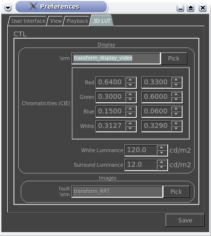

|  |
Displayallows you to configure the CTL script used to convert the image from mrViewer's internal floating point data onto your screen.This section allows you to change the default RGB and White chromaticies of your monitor. You should not use this as a color correction tool. This setting specifies the brightness of your monitor. It should only be modified if you have a proper callibration tool. This setting specifies the brightness of your environment or surroundings. It should only be modified if you have a proper callibration tool. ImagesAllows you to specify the default transform for taking an image to mrViewer's internal representation, unless the image already comes with its own embedded CTL transform. |